응용지질기사 (2007-03-04 기출문제)
1과목: 암석학 및 광물학
1. 정장석에서 관찰할 수 있는 칼스바드(Carlsbad) 쌍정은 c축을 쌍정축으로 몇 도 회전하여 이루어지는가?
- 30°
- 60°
- 120°
- 180°
(정답률: 50%)

2. 어떤 광물의 분석치가 Fe 46.55wt%, S 53.⑤wt%이면 이는 다음 어느 광물에 해당하는가? (단, 원자량 Fe:55.85, S:32.07)
- 황철석
- 자류철석
- 황동석
- 능철석
(정답률: 60%)
3. 소금(NaCl)을 이루는 원자들의 화학적 결합의 종류는 어떤 것인가?
- 금속결합
- 공유결합
- 판데르바알스 결합
- 이온결합
(정답률: 72%)
4. Gibbs의 상률(phase rule)을 올바르게 표시한 것은? (단, P:상(相)의 수, F:자유도, C:성분의 수)
- P+C=F+2
- P+2=C=F
- P+F=C+2
- P+C+F+2
(정답률: 58%)
5. 다음 중 광원에 따라 색이 다르게 나타나는 광물은?
- 알렉산드라이트
- 녹주석
- 조이사이트
- 탄자나이트
(정답률: 36%)
6. 다음 중 광물의 동위원소분석으로부터 알 수 없는 것은?
- 광물의 미량원소 함량
- 광물의 생성환경
- 광상의 생성환경
- 광물의 절대연령
(정답률: 31%)
7. 다음 중 결정을 이루는 3요소로 맞는 것은?
- 결정면, 능, 우각
- 결정면, 단위포, 방향
- 능, 우각, 결정축
- 결정축, 결정면, 방향
(정답률: 60%)
8. 다음 중 일축성(uniaxial) 광물에 속하는 것은?
- 형석
- 백운모
- 정장석
- 석영
(정답률: 22%)
9. 결정의 성장이 우각이나 능에서 주로 일어날 때 만들어지는 불완전한 결정은 무엇인가?
- 해정
- 누대상 결정
- 휘스커
- 수지상 결정
(정답률: 60%)
10. 편광현미경은 광물의 광학적 특성을 관찰하는데 이용된다. 광축에 수직인 방향으로 제작된 박편을 놓고 수렴된 단색광을 통과시켜 직교니콜 하에서 관찰하면 그림과 같이 보이는데 이런 현상을 무엇이라 하는가?
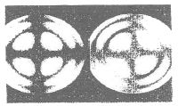
- 간섭상
- 다생성
- 볼굴절
- 소광 현상
(정답률: 47%)
11. 사암에서 발견되는 중광물 중에서 모암이 고변성도의 변성암임을 강력히 시사해 주는 것은?
- 저어콘, 석류석
- 십자석, 규선석
- 황목, 홍주석
- 남정석, 인회석
(정답률: 65%)
12. 화성암의 분류 기준이 되기에 가장 부적절한 것은?
- 암석의 산출상태
- 암석의 구성광물
- SiO2 함량
- 암석의 노옴(norm) 값
(정답률: 67%)
13. 다음에서 가장 고압형의 변성상(metamorphic facies)은?
- 불석상(zeolite facies)
- 녹색편암상(greenschist facies)
- 각섬석상(amphibolite facies)
- 에클로자이트상(eclogite facies)
(정답률: 65%)
14. 다음은 어떤 퇴적암의 광물성분 관계를 나타낸 그림이다. 그림에서 B에 속하는 암석명은?
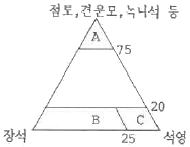
- 셰일
- 석염사암
- 그레이와케(graywacke)
- 아르코스(arkose)
(정답률: 56%)
15. 다음 화산체의 형태 중 주로 현무암질 용암으로 구성되어 있는 것은?
- 복합화산
- 종상화산
- 성층화산
- 용암대지
(정답률: 74%)
16. 다음 중 지층의 상하 판단을 할 수 있는 퇴적구조와 가장 거리가 먼 것은?
- 사층리
- 퇴적소극
- 연흔
- 건열
(정답률: 70%)
17. 다음 중 접촉 변성 작용에 영향을 미치는 주요요인이 아닌 것은?
- 마그마의 양
- 마그마의 열량
- 마그마의 화학 성분
- 마그마의 압력
(정답률: 40%)
18. 검은색의 광물과 담색광물이 호층을 이루며 정장석 등의 반상변정을 포함하는 암석은?
- 편암
- 호상 편마암
- 휘석 편마암
- 안구상 편마암
(정답률: 28%)
19. 다음 중 현정질 조직을 보일 수 있는 암석은?
- 섬록암
- 현무암
- 안산암
- 유문암
(정답률: 63%)
20. 다음 광물 중에서 저온ㆍ고압의 변성작용 지시자로서 사용되는 광물은?
- 십자석(staurolite)
- 남섬석(glaucophane)
- 불석족(zeolite group)
- 근청석(cordierite)
(정답률: 43%)
2과목: 구조지질학
21. 견고한 사암이 계일과 호층을 이루고 있을 때 지층과 평행한 인장력에 의해 사암은 마디마디 소시지 모양으로 끊어지고, 그 사이를 셰일이 채우고 있다. 어떤 지질구조인가?
- 멀리언 구조
- 파랑 선구조
- 부딘 구조
- 교차 선구조
(정답률: 56%)
22. 리히터로 진도 7.3의 지진은 진도 5.3의 지진에 비해서 몇 배에 해당하는 에너지를 방출하는가?
- 2배
- 6배
- 10배
- 900배
(정답률: 84%)
23. 부정합에 나타날 수 있는 특징 중 가장 관계가 적은 것은?
- 기저역암
- 층의 결층
- 변성도의 차이
- 단층의 발달
(정답률: 70%)
24. 다음 중 심성암 및 변성암 위에 다른 지층이 시간간격을 가지고 놓여 있는 부정합의 형태는?
- 비정합(disconformity)
- 난정합(nonconformity)
- 경사부정합(angular unconformity)
- 기저부정합(basal unconformity)
(정답률: 50%)
25. 다음은 Byerlee에 의하여 구하여진 일반적인 암석의 마찰관계식(friction equation)이다. 상수 A, B, C값을 순서대로 나열한 것은?
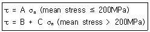
- A=0.6, B=40, C=0.85
- A=0.5, B=60, C=0.7
- A=0.85, B=50, C=0.6
- A=0.7, B=60, C=0.4
(정답률: 28%)
26. 석회암지대에서 하늘을 향해 열린 큰 용해공동을 무엇이라 하는가?(오류 신고가 접수된 문제입니다. 반드시 정답과 해설을 확인하시기 바랍니다.)
- 싱크홀
- 동굴
- 지반침하
- 카르스트
(정답률: 17%)
27. 다음 중 지각 변동의 증거가 되기 어려운 지형은?
- 해안 단구
- 단층 절벽
- 칼데라호
- 돌리네
(정답률: 53%)
28. 만약 100MPa의 전단 응력이 0.1/milion year(my)의 전단 변형율을 형성했다면, 이 물질의 점성도(Viscosity)는?
- 1 MPa-my
- 10 MPa-my
- 100 MPa-my
- 1000 MPa-my
(정답률: 47%)
29. 다음 중 대륙지각의 분류라 할 수 없는 것은?
- 순상지(shield)
- 대지(platform)
- 오피(ophiolite)
- 현생누대 조산대
(정답률: 71%)
30. 판구조론에 입각한 조산운동론에 의하면 히말라야산맥의 생성원인은 어느 것인가?
- 유라시아판과 태평양판의 충돌
- 유라시아판과 아프리카판의 충돌
- 유라시아판과 인도-호주판의 충돌
- 유라시아판과 아라비아판의 충돌
(정답률: 75%)
31. 남북주향에 동쪽으로 40° 경사진 사면에 평면파괴가 발생할 수 있는 층의 주향과 경사는 다음 중 어느 것인가?
- E-S. 35° W
- E-W, 30° N
- N-S, 50° E
- N-S 30° E
(정답률: 8%)
32. 압축 메카니즘에 의하여 지진이 발생하는 곳은?
- 해구(trench)
- 해령(oceanic ridge)
- 변환단층(transform fault)
- 순상지(shield)
(정답률: 알수없음)
33. 다음 그림을 설명하는 용어 중 맞는 것은? (단, TR, J, K는 각각 지질시대를 나타내는 약자이며, 순서대로 Triassic, Jurassic, Cretaceous를 의미한다.)
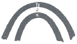
- 배사(anticline)
- 향사형 배사(synformal anticline)
- 향사(syncline)
- 배사형 향사(antiformal syncline)
(정답률: 39%)
34. 암석 단위를 대비할 때 다른 층과 쉽게 분간되며, 광범위하게 분포하는 단위층은?
- 열쇠층
- 표준화석
- 대비층
- 화산재층
(정답률: 69%)
35. 다음 절리(joint) 중 지표나 지표 근처의 천부에서 주로 생성되는 절리는?
- 전단절리(shear joint)
- 층상절리(sheeting joint)
- 공액절리(conjugate joint)
- 직교절리(orthogonal joint)
(정답률: 65%)
36. 다음 중 그 분류상의 특징이 다른 하나는?
- 습곡측
- 광물신장구조
- 멀리온(mullion)
- 파랑벽개(creulation cleavage)
(정답률: 62%)
37. 어떤 학생이 야외조사를 하다가 습곡구조를 발견하였다. 이 습곡구조의 정확한 습곡축을 알기 위하여 평사두영법(stereographic projection)을 이용하여 양 날개(wing)의 주향과 경사를 표시하였더니 아래의 그림에서 도시된 바와 같이 되었다. 아래에서 이 습곡의 습곡축은?
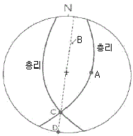
- A
- B
- C
- D
(정답률: 60%)
38. 지각 및 상부 맨틀을 포함하고 있으며, 주로 탄성변형이 일어나는 곳은?
- 연약권
- 맨틀
- 암석권
- 지각
(정답률: 75%)
39. 다음 지형 중 스러스트 단층과 관련이 없는 것은?
- 클리페(Klippe)
- 창(window)
- 지루(horst)
- 극융(culmination)
(정답률: 55%)
40. East Pacifc Rise는 어느 판 경계에 해당하는가?
- 발산형
- 수렴형
- 변환단층형
- 화산형
(정답률: 47%)
3과목: 탐사공학
41. 다음 원소 중 지표 부근의 환경조건에 따른 상대적 이동도가 가장 큰 것은?
- Cl
- Si
- Al
- Fe
(정답률: 31%)
42. 토양지구화학탐사에서 주로 채취대상이 되는 토양층은? 단, O, A, B, C는 일반적으로 토양을 분류할 때 사용하는 기호이다.)
- 유기물층(O층)
- 용탈층(A층)
- 집적층(B층)
- 풍화 암석층(C층)
(정답률: 58%)
43. 다음의 자력계 중에서 양성자의 세차운동을 이용하여 총 자기를 측정하는 것은?
- Flux-gate 자력계
- Schmid형 자력계
- 핵 자력계
- 자울형 자력계
(정답률: 42%)
44. 화성암이 고온 상태에서 식으면서 얻는 잔류자기는 암석의 어떤 영구자화 방식으로 주로 형성되는가?
- 등온 잔류자화
- 열 잔류자화
- 점성 잔류자화
- 화학 잔류자화
(정답률: 55%)
45. 다음 전자탐사법 중 마치 탄성파 탐사와 유사한 방법으로 탐사자료를 획득하고 처리하는 방법은 무엇인가ㅑ?
- MT 탐사법
- TEM 탐사법
- VLF 탐사법
- GPR 탐사법
(정답률: 50%)
46. 수평 2층 지하구조에서 상부층의 P파 속도가 1000m/sec, 하부층의 P파 속도가 1414m/sec이다. 이 때 경계면에서의 P파 굴절 임계각은?
- 35°
- 45°
- 55°
- 65°
(정답률: 47%)
47. 암석이 수백도의 고온에 이르면 자성을 잃게 되는 성질을 이용하여 지열의 부존을 확인하는 탐사 방법은?
- 전기비저항법
- Curie 점법
- MT법
- P파 지연법
(정답률: 67%)
48. 굴절법 탄성파 탐사에서 아래 그림과 같은 주시 곡선을 얻었다. 수평 2층 지하구조라는 가정 아래 심부층의 두께를 구하면 얼마인가?
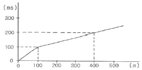
- 35.4m
- 70.6m
- 1⑤.9m
- 17.6m
(정답률: 47%)
49. 암석이나 잔류토양을 시료로 맥상 금광상을 추적하기 위하여 가장 적합한 지시원소는?
- Hg
- As
- Zn
- Se
(정답률: 65%)
50. 유도분극(IP) 현상의 주파수 효과에 대한 다음 설명 중 옳은 것은?
- 주파수가 낮아질수록 관측전위는 커지며, 따라서 겉보기 비저항도 커진다.
- 주파수가 낮아질수록 관측전위는 작아지며, 따라서 겉보기 비저항도 작아진다.
- 주파수가 높아질수록 관측전위는 커지나, 겉보기 비저항은 작아진다.
- 주파수가 높아질수록 관측전위는 작아지나, 겉보기 비저항은 커진다.
(정답률: 22%)
51. 전기비저항 검층법 중 송신전류를 수평방향으로 흘려보내 인접지층의 영향을 최소화하고 조사심도를 향상시킨 방법은?
- 단노말 전기비저항 검층
- 래터럴 전기비저항 검층
- 마이크로 전기비저항 검층
- 지향식 전기비저항 검층
(정답률: 34%)
52. 지력탐사결과를 2차 미분하여 해석할 경우 어떤 이익이 있는가?
- 자력원인체의 세부화
- 자력변화율의 감소화
- 자력측정치의 광역화
- 자력성분의 벡타분석
(정답률: 47%)
53. 부게(Bouger) 보정에 대한 설명으로 틀린 것은?
- 측정지점이 기준면보다 고도가 낮으면 보정값을 측정 중력치에서 빼준다.
- 측정지점과 기준면 사이에 존재하는 물질의 인력에 의하여 나타나는 중력의 차이를 보정하여 주는 것이다.
- 보정값은 0.04193 ρㆍh로 계산한다. 여기서 ρ는 암석밀도이고, h는 고도차이다.
- 부게 보정은 프리에어 보정과 부호가 반대이며, 이 둘을 합하여 고도 보정이라 한다.
(정답률: 42%)
54. 반사법 탄성파 탐사자료의 처리 계통순서를 바르게 배열한 것은?
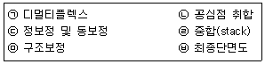
- ㉠-㉡-㉢-㉣-㉤-㉥
- ㉢-㉠-㉡-㉣-㉤-㉥
- ㉢-㉤-㉠-㉡-㉣-㉥
- ㉠-㉢-㉡-㉣-㉤-㉥
(정답률: 34%)
55. 중력 측정 시 사용되는 중력계 중에서 장주기 수직 지진계의 원리를 응용하여 만든 것으로 전형적인 불안정형 중력계는?
- Gulf 중력계
- LaCoste-Romberg 중력계
- Boliden 중력계
- 항공탐사용 중력계
(정답률: 59%)
56. 전자탐사법에 대한 설명으로 틀린 것은?
- 시간영역(time domain) 전자탐사는 계단파(step function)를 사용하여 맴돌이 전류(eddy current)에 의한 2차장을 측정한다.
- 주파수영역 전자탐사법에서는 가탐심도가 주파수의 제곱근에 비례하므로 심부탐사를 위해서는 고주차수를, 천부탐사를 위해서는 저주파수를 사용한다.
- 전자탐사는 전자기적인 잡음이 강한 지역에서는 조사가 불가능하다.
- 전자탐사는 암반지역과 같이 전극의 설치가 불가능한 지역에서도 탐사가 가능하다.
(정답률: 37%)
57. 전기비저항 탐사를 수행할 때 전극배열에 관한 설명으로 틀린 것은?
- 쌍극자 배열은 신속하게 수직 및 수평 탐사를 수행할 수 있어 비교적 광역적으로 지하의 2차원적인 전기비저항 정보를 억을 수 있다.
- 슐럼버저 배열은 전위전극간의 간격이 전류전극간의 간격에 비해 훨씬 좁다.
- 웨너 배열은 전위전극 간격이 커져도 탐사기기의 민감도를 증대시킬 필요가 없으며, 겉보기비저항 식이 간단하다.
- 슐럼버저 배열은 국부적인 지표면 근처의 수평적 변화에 웨너 비열보다 민감하다.
(정답률: 19%)
58. 반사법 탄성파 탐사에서 취득된 자료에 대한 보정 작업의 하나로서 각 수진점의 고도 변화, 풍화대 두께의 차이, 속도가 낮은 풍화대에 의한 시간차를 보정해 주는 것은?
- 구조보정
- 동보정
- MNO보정
- 정보정
(정답률: 34%)
59. 결정질 암석에서 P파 전파속도 VP와 S파 전파속도 VS와의 일반적인 관계로 옳은 것은?
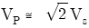
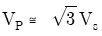
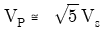
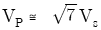
(정답률: 63%)
60. 다음 중 암석의 밀도를 변화시키는 요인이 아닌 것은?
- 조암광물의 밀도
- 암석의 공극률
- 공극에 채워져 있는 유체의 종류
- 조암광물의 화학성분
(정답률: 40%)
4과목: 지질공학
61. 암반의 공학적 분류법 중 RMR(Rock Mass Rating) 분류법이 있다. 다음 중 RMR 분류법에서 고려되는 요소가 아닌 것은?
- 무결암 강도
- 코어 암질 지수
- 지하수 상태
- 암반 응력상태
(정답률: 42%)
62. 단위중량이 25RN/m3인 암석이 지표면에서 100m 심도까지 분포하고, 100m에서 200m까지는 다른 암종의 암석이 존재한다. 160m지점에서의 수직응력이 4.12MPa인 경우 두 번째 층 암석의 단위중량은 얼마인가?
- 24RN/m3
- 27RN/m3
- 30RN/m3
- 33RN/m3
(정답률: 44%)
63. 어떤 암석의 영률이 50GPa, 포아송비가 1/3인 경우 체적탄성계수는 얼마인가?
- 20GPa
- 30GPa
- 40GPa
- 50GPa
(정답률: 28%)
64. 사면위의 불연속들의 분포가 다음의 평사투영과 같을 때 사면에서 어떤 형태의 파괴가 예상되는가?
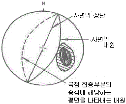
- 평면파괴
- 원호파괴
- 쐐기형 파괴
- 전도파괴
(정답률: 44%)
65. 공간정보와 속성정보를 이용하여 전산화 시켜 지도를 제작, 관리하는 것으로 국내외에서 최근 지반조사시에도 널리 활용되고 있는 것은?
- GPS
- GIS
- CBR
- SPT
(정답률: 63%)
66. 사면의 전단응력을 증가시키는 요인에 속하는 것은?
- 균열 내에 작용하는 수압
- 공극수압의 증가
- 느슨한 토립자의 진동
- 수분증가에 따른 점토의 팽창
(정답률: 34%)
67. 암반의 풍화도를 국제암반역학회가 제안한 방법에 따라 분류하였을 때, 일축압축강도(건조상태)가 350~550kgf/cm2이며, 간조상태의 P파 속도가 1.7~1.8km/sec에 해당되어 리핑 굴착이 가능한 정도의 풍화도는?
- 신선암(F)
- 완전 풍화(CW)
- 보통 풍화(MW)
- 약 풍화(SW)
(정답률: 36%)
68. 댐 건설 부지를 선정하려 한다. 다음 중 지하공동 생성의 위험 때문에 가장 피해야 할 곳은?
- 사암 지역
- 현무암 지역
- 반려암 지역
- 석회암 지역
(정답률: 67%)
69. 다음 중 표준관입시험에서 N치가 실제보다 낮은 값으로 측정되는 요인으로 작용할 수 있는 것은?
- 액상화 현상
- 자갈을 포함한 지층
- 심부 시추공
- 다져진 토양층
(정답률: 43%)
70. 표준관입시험에 대한 설명으로 맞지 않는 것은?
- 점성토에서나 사질토에서 시험한 N값의 의미는 같다.
- 15cm의 예비박기, 30cm의 본박기를 실시하고, 본박기 30cm에 대한 타격 횟수를 N값으로 한다.
- 자갈층과 혼재하는 토층에서 취한 N값은 지반의 성질을 과대 평가할 위험성이 있다.
- 시험시 63.5kg 정도의 해머를 76cm 정도에서 낙하시킨다.
(정답률: 48%)
71. 다음 설명 중 틀린 것은?
- 표면장력에 의해 공극에 보유되어 있는 물을 모관수라고 하며, 지하수면 상부의 불포화대나 모세관대에 존재한다.
- 자유면 대수층의 상부 경계는 지하수면이다.
- 자유면 대수층의 저류계수는 비산출률과 같은 것으로 생각해도 무방하다.
- 피압대수층의 피압면이 지표면 하부에 존재하면 자분정상태가 발생한다.
(정답률: 60%)
72. 극히 느린 속도로 사면을 따라 미미하게 계속되는 풍화생성물의 이동을 무엇이라 하는가?
- 포행(Creep)
- 계류(Creek)
- 유수(Steeam)
- 이류(mudflow)
(정답률: 63%)
73. 현장에서 채취한 젖은 흙의 무게가 192g, 체적이 120cm3이고, 이 흙을 110±5℃로 향온 건조한 후 무게가 158g 이었다면 공극률은 얼마인가? (단, 흙의 비중=2.65)
- 50.25%
- 42.20%
- 40.20%
- 35.25%
(정답률: 45%)
74. 경제적으로 개발할 수 있을 정도의 다량의 지하수를 포함하고 있는 암석 또는 지층을 무엇이라 하는가?
- 대수층
- 투수층
- 파쇄대
- 지하수면
(정답률: 58%)
75. 사면의 잠재적 불안정 요소로 가장 거리가 먼 것은?
- 팽창성 점토지반
- 수직 절리의 발달이 심한 지반
- 상부는 경암, 하부는 토사로 구성된 지반
- 절리가 없는 신선한 화강암 지반
(정답률: 70%)
76. 그림에서 유체의 흐름은 일정하고(steady), 유출속도(v)도 2m/day로 일정하다. 또한 A와 B지점 사이의 투수계수 KAB=10m/day이며, A 지점의 수두, hA=10m이다. 이 때 B 지점에서의 수두는 얼마인가?
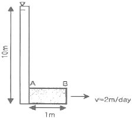
- 8.6m
- 9.8m
- 10m
- 10.4m
(정답률: 58%)
77. 다음 그림과 같은 건조한 무한 사면이 있다. 흙과 암반의 경계면에서 전단강도점수 c=2.0t/m2, ø=20°이고, 흙의 단위 중량은 1.95t/m3이다. 사면의 높이가 6m, 경사가 25°일 때 경계면의 활동에 따른 안전율은?
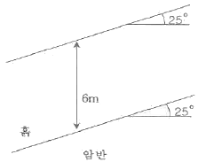
- 1.8
- 1.23
- 1.33
- 1.49
(정답률: 27%)
78. 지하수의 분포 중 통기대에 속하지 않는 것은?
- 토양수대
- 포화대
- 중간대
- 모관대
(정답률: 60%)
79. 지반 개량 공법 중 연직배수(vertical drain) 공법에 대한 설명으로 틀린 것은?
- 압밀침하를 촉진시키는 공법이다.
- 지반의 강도를 증가시키는 공법이다.
- 사질지반에 주로 적용되는 공법이다.
- 샌드 드레인 공법, 페이퍼 드레인 공법 등으로 구분할 수 있다.
(정답률: 36%)
80. 유선망(flow net)의 특성에 대한 설명으로 틀린 것은?
- 인접한 2개의 유선 사이를 흐르는 침투수량은 서로 같다.
- 투수속도 및 수두경사는 유선망의 폭에 비례한다.
- 인접한 2개의 등수두선 사이의 손실수두는 서로 같다.
- 흙이 균질할 때 흙속의 침투수는 수두경사가 가장 급한 방향으로 흐른다.
(정답률: 59%)
5과목: 광상학
81. 때때로 품위가 높은 합금액을 형성하는 알라스카이트(Alaskite) 암맥은 어떤 암석의 변종인가?
- 섬장암
- 화강암
- 페그마타이트
- 규장암
(정답률: 8%)
82. 우리나라 비금속 광상의 주된 광화 시기는?
- 석탄기
- 트라이아스기
- 쥐라기
- 백악기
(정답률: 20%)
83. 다음 중 상동 중석광상의 유형은?
- 스카른형
- 열수교대형
- 열수충진형
- 정마그마형
(정답률: 36%)
84. 다음 광물 중에서 공생관계를 갖지 않는 것은?
- 황동석, 섬아연석
- 금, 석영, 황철석
- 휘창연석, 형석, 유비철석
- 형석, 휘수연석
(정답률: 31%)
85. 반암형 금속광상의 변질대는 일반적으로 공간적 대상 분포를 보여준다. 광상의 가장 중심부에 위치하는 변질대는?
- 이질변질대
- 칼륨변질대
- 프로필라이트변질대
- 필릭변질대
(정답률: 31%)
86. 석유의 유출을 막아주는 유개암(cap-rock)으로서 가장 적당한 암석은?
- 셰일
- 사암
- 역암
- 현무암
(정답률: 58%)
87. 심해저 망간단괴에서 산출되지 않는 성분은?
- 구리
- 티타늄
- 코발트
- 비소
(정답률: 30%)
88. 평안계의 사동통 자층에 관한 설명 중 틀린 것은?
- 우리나라의 중요한 함탄층이다.
- 선캄브리아기에 퇴적된 지층이다.
- 하부에는 해성층, 위로는 육성층이다.
- 남한에서는 강원도에 가장 넓게 분포한다.
(정답률: 39%)
89. 다음 중 황철석의 주요 용도는?
- 내화제 원료
- 시멘트 원료
- 황산제조
- 금의 제련용제
(정답률: 65%)
90. 강원도 양양 철광산에서 가장 많이 나오는 철광석은?
- 간철석
- 적철석
- 자철석
- 황철석
(정답률: 32%)
91. 견운모를 가장 많이 형성하는 모암변질작용은?
- 칼륨변질작용
- 필릭변질작용
- 이질변질작용
- 강이질변질작용
(정답률: 30%)
92. 열수광상에서의 모암의 변질작용과 관련이 없는 것은?
- 견운모화 작용
- 황옥화 작용
- 녹니석화 작용
- 불석화 작용
(정답률: 27%)
93. 다음 금속원소 중 페그마타이트 광상에서 산출되지 않는 것은?
- Ni
- W
- Sn
- Mo
(정답률: 31%)
94. 아래 그림은 화성광상 생성과정 중의 온도와 증기압과의 관계를 나타낸다. 그림 중 기성광상 단계의 영역은?
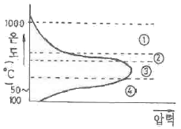
- ①
- ②
- ③
- ④
(정답률: 54%)
95. 광물의 침전온도와 압력 및 광화유체의 화학적 특성에 대한 정보를 제공하는 것은?
- 광물의 조직과 결정형
- 안정동위원소
- 용융점
- 유체포유물
(정답률: 40%)
96. 다음 중 광석광물의 침전을 결정하는 주요 요인과 가장 관계가 먼 것은?
- 온도
- 압력
- 모암의 화학조성
- 모암의 투수성
(정답률: 45%)
97. 광상성인 중 마그마가 고결하는 주요한 시기에 마그마의 분화에 의해 특정한 성분이 농집되어 화성암체의 일부로서 형성된 광상은?
- 변성광상
- 퇴적광상
- 정마그마광상
- 반암동광상
(정답률: 54%)
98. 다음 중 사문암이 광역변성작용을 받아 변성 광상을 이루었을 때 생성 될 수 있는 것은?
- 고령토
- 석고
- 활석
- 규조토
(정답률: 31%)
99. 조선누층군 석회석광상의 특징이 아닌 것은?
- 주로 대석회암층군(품촌석회암, 막동석회암)에 부존되어 있다.
- 지질연대로는 석탄기말이 대부분이다.
- 분포지역으로는 강원도 중부와 남부, 충북 북부지역이 해당된다.
- 과거 해변의 온난한 기후아래 산화환경에서 퇴적되었던 것으로 사료된다.
(정답률: 43%)
100. 한국 동 황상구(Cu-metallogenetic province)의 대표적인 지역은?
- 태백산지역
- 공주지역
- 경남지역
- 제주도지역
(정답률: 45%)